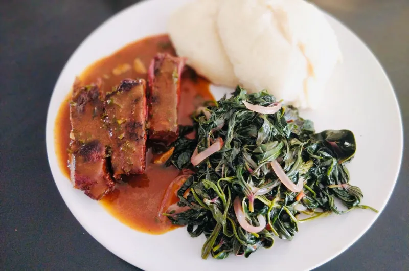
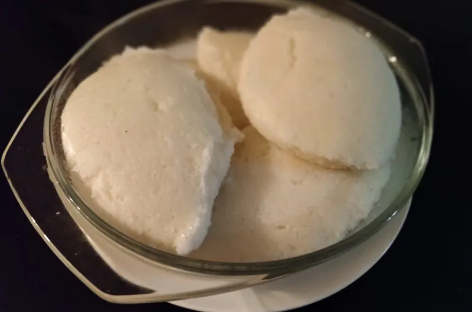

images of nshima and kalembula(sweet potatoe leaves) as a side dish
Zambians enjoy this meal and here is a guide on how to prepare both the nshima and kalembula(sweet potatoes leaves) prep time 2hours 15minutes,cooking time 30 minutes ,serving 5
ingredients kalembula(sweet potato leaves)
300g kalembula(sweet potato leaves)
1 medium tomato
1 medium onion
1/2 teaspoon salt
3 tablespoons vegetable oil
Steps
Start by washing the Kalembula and separating the leaves from the long stalks.
This step is optional, however, to reduce the moisture content, you can spread the Kalembula on a wide tray and allow it to air-dry in the sun for a few minutes. 😊
After about 2 hours in the sun, the leaves will wither down and look like this 😊. Less water, and perfect to now cook. Without this step, the veggies will release water and the dish can get a bit soggy and slimy. 🤭
Cut up the tomato and onion and set aside. 😊
Heat up the oil and saute the onions first, and then add in the tomato. Also add the salt and cook this mixture for about 3 minutes. 😊
Add the leaves to the pan and mix them into the tomato mixture with a cooking stick 😊
After a few minutes of this, everything will wilt down and fit into the pan. Cover the pan to allow steam to build up. Cook for 5 minutes, uncover and stir through with the cooking stick. Cover again and turn off the heat. The residual heat from
the stove will continue to cook the veggies for another 4 -5 minutes, and after that – the dish is ready! 😊
now prepare nshima the main dish
ingredients for Nshima
3 cups of mealie meal/white cornmeal
1 litre boiling water
1 1/2 cups cold water
Steps
Boil 1 Litre of water in advance, in a Kettle or Sauce pan.
Once the water boils, combine 1 cup of Cornmeal or Mealie Meal as we call it, with 1 1/2 cups of cold water in a sauce pan, to make a smooth paste. A flat cooking stick is ideal for this.
Transfer the Cornmeal paste to the stove (set at medium high heat), and then slowly pour about 700ml of boiling water into the saucepan, stirring continuously, making sure the mixture is smooth and well combined.
This should lead to a smooth porridge, almost creamy. Allow this to boil for at least 10 minutes, covered.
Remove the cover after 10 minutes and begin to add the remaining Cornmeal to the porridge, a little at a time, making sure it is well combined, before adding some more.
The porridge should stiffen up quickly with each addition of Cornmeal, and you will need to exert a bit of muscle to mix this well, smoothing out any lumps that form in the process 😉
Once fully combined, cover the pot with a well fitting lid and allow to cook for another 10 minutes. Lift the lid after the first 5 minutes and mix through the Nshima again before replacing the lid, for the remaining five minutes.
Remove from the stove after the 10 minutes, and using a smooth serving spoon, scoop out the Nshima, one lump at a time and transfer into your serving dish.